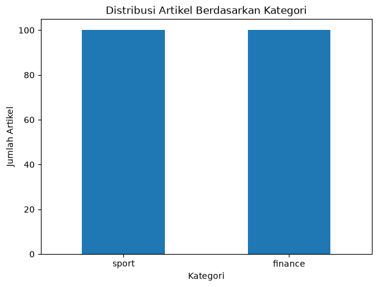
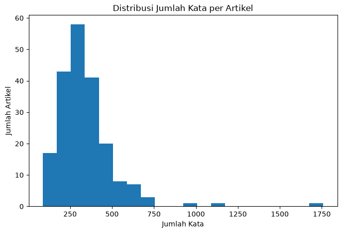

Tugas 1 — Scraping Berita Detik.com Kategori Sport dan Finance#
Notebook ini digunakan untuk melakukan pencarian dan penambangan data berita dari website Detik.com.
Data yang dikumpulkan terdiri dari dua kategori berita, yaitu:
Sport
Finance
Target pengumpulan data adalah 100 artikel dari kategori Sport dan 100 artikel dari kategori Finance sehingga diperoleh maksimal 200 artikel.
Proses scraping meliputi:
Pengumpulan URL artikel.
Validasi URL.
Ekstraksi isi artikel menggunakan Trafilatura.
Penyimpanan dataset berdasarkan kategori.
Penggabungan dataset Sport dan Finance.
Pemeriksaan kualitas dataset.
Analisis statistik sederhana terhadap corpus berita.
1. Alat dan Library#
Library yang digunakan dalam proses scraping adalah:
requestsuntuk melakukan HTTP request.BeautifulSoup4untuk membaca dan menganalisis struktur HTML.trafilaturauntuk mengekstraksi teks utama artikel.pandasuntuk mengolah dataset.tqdmuntuk menampilkan progress bar.timeuntuk memberikan jeda antar-request.reuntuk validasi pola URL.urllib.parseuntuk melakukan normalisasi dan pemeriksaan URL.
!pip install -q requests beautifulsoup4 trafilatura pandas tqdm openpyxl
import requests
from bs4 import BeautifulSoup
import trafilatura
import pandas as pd
import time
import re
import os
from tqdm import tqdm
from urllib.parse import urljoin, urlsplit, urlunsplit
from datetime import datetime
print("Semua library berhasil diimport.")
Semua library berhasil diimport.
2. Konfigurasi Scraping#
Sumber data berasal dari:
Detik Sport
Detik Finance
Masing-masing kategori ditargetkan sebanyak 100 artikel.
URL artikel akan dikumpulkan terlebih dahulu sebelum dilakukan proses ekstraksi teks.
BASE_URL_SPORT = "https://sport.detik.com/"
BASE_URL_FINANCE = "https://finance.detik.com/"
TARGET_ARTICLES = 100
MAX_PAGES = 50
HEADERS = {
"User-Agent": (
"Mozilla/5.0 (Windows NT 10.0; Win64; x64) "
"AppleWebKit/537.36 (KHTML, like Gecko) "
"Chrome/154.0.0.0 Safari/537.36"
)
}
REQUEST_DELAY = 1.0
print("Konfigurasi scraping berhasil dibuat.")
print("Target Sport :", TARGET_ARTICLES)
print("Target Finance :", TARGET_ARTICLES)
print("Maksimum halaman:", MAX_PAGES)
Konfigurasi scraping berhasil dibuat.
Target Sport : 100
Target Finance : 100
Maksimum halaman: 50
3. Session HTTP#
Session digunakan agar koneksi HTTP dapat digunakan kembali selama proses scraping.
User-Agent digunakan agar request memiliki informasi client yang wajar ketika mengakses website.
session = requests.Session()
session.headers.update(HEADERS)
print("HTTP Session berhasil dibuat.")
HTTP Session berhasil dibuat.
4. Normalisasi URL#
URL yang ditemukan dari halaman indeks dinormalisasi agar URL yang sama dengan query parameter atau fragment berbeda tidak dianggap sebagai artikel yang berbeda.
Normalisasi dilakukan dengan mempertahankan:
scheme
netloc
path
sedangkan query dan fragment dihilangkan.
def normalize_url(url):
try:
parts = urlsplit(url)
return urlunsplit(
(
parts.scheme.lower(),
parts.netloc.lower(),
parts.path.rstrip("/"),
"",
""
)
)
except Exception:
return None
5. Validasi URL Artikel#
URL yang digunakan harus memenuhi beberapa kondisi:
menggunakan HTTP atau HTTPS;
berasal dari domain Detik yang sesuai;
memiliki pola URL artikel;
bukan halaman foto;
bukan halaman video;
belum pernah dikumpulkan sebelumnya.
Validasi ini digunakan untuk mengurangi kemungkinan URL yang tidak sesuai masuk ke dataset.
def valid_article_url(url, base_url):
if not url:
return False
normalized = normalize_url(url)
if not normalized:
return False
parsed = urlsplit(normalized)
base_parsed = urlsplit(base_url)
if parsed.scheme not in ["http", "https"]:
return False
if parsed.netloc != base_parsed.netloc:
return False
if "foto" in parsed.path.lower():
return False
if "video" in parsed.path.lower():
return False
if not re.search(r"/d-\d+", parsed.path):
return False
return True
6. Mengumpulkan URL Artikel#
Pengumpulan URL dilakukan melalui halaman indeks kategori.
Proses dilakukan secara bertahap berdasarkan pagination ?page=.
URL yang telah ditemukan disimpan dalam list dan duplikasi dihindari.
def dapatkan_url_detik(url_dasar, target_jumlah=100):
url_list = []
url_set = set()
halaman = 1
print(f"Mulai mencari artikel dari: {url_dasar}")
with tqdm(total=target_jumlah, desc="Mengumpulkan URL") as pbar:
while len(url_list) < target_jumlah and halaman <= MAX_PAGES:
url_indeks = f"{url_dasar}indeks?page={halaman}"
try:
response = session.get(
url_indeks,
timeout=15
)
if response.status_code != 200:
print(
f"\nPeringatan: status {response.status_code} "
f"pada halaman {halaman}"
)
halaman += 1
time.sleep(REQUEST_DELAY)
continue
soup = BeautifulSoup(
response.text,
"html.parser"
)
artikel_elemen = soup.find_all("article")
if not artikel_elemen:
print(
f"\nTidak menemukan elemen artikel "
f"pada halaman {halaman}."
)
halaman += 1
time.sleep(REQUEST_DELAY)
continue
jumlah_sebelum = len(url_list)
for artikel in artikel_elemen:
link = None
if artikel.has_attr("i-link"):
link = artikel.get("i-link")
if not link:
tag_a = artikel.find("a", href=True)
if tag_a:
link = tag_a.get("href")
if link:
link = urljoin(
url_dasar,
link
)
link = normalize_url(link)
if (
valid_article_url(
link,
url_dasar
)
and link not in url_set
):
url_set.add(link)
url_list.append(link)
pbar.update(1)
if len(url_list) >= target_jumlah:
break
if len(url_list) == jumlah_sebelum:
print(
f"\nTidak ada URL baru pada halaman {halaman}."
)
halaman += 1
time.sleep(REQUEST_DELAY)
except requests.RequestException as e:
print(
f"\nGagal mengakses halaman {halaman}: {e}"
)
halaman += 1
time.sleep(REQUEST_DELAY)
except Exception as e:
print(
f"\nTerjadi kesalahan pada halaman {halaman}: {e}"
)
halaman += 1
time.sleep(REQUEST_DELAY)
print(
f"\nURL berhasil dikumpulkan: {len(url_list)}"
)
return url_list
7. Mengumpulkan URL Sport dan Finance#
url_sport = dapatkan_url_detik(
BASE_URL_SPORT,
TARGET_ARTICLES
)
print("\n" + "=" * 60)
url_finance = dapatkan_url_detik(
BASE_URL_FINANCE,
TARGET_ARTICLES
)
print("\n=== HASIL PENGUMPULAN URL ===")
print("URL Sport :", len(url_sport))
print("URL Finance :", len(url_finance))
Mulai mencari artikel dari: https://sport.detik.com/
Mengumpulkan URL: 0%| | 0/100 [00:00<?,
Mengumpulkan URL: 1%| | 1/100 [00:00<00:
Mengumpulkan URL: 16%|▏| 16/100 [00:01<00
Mengumpulkan URL: 32%|▎| 32/100 [00:03<00
Mengumpulkan URL: 50%|▌| 50/100 [00:04<00
Mengumpulkan URL: 70%|▋| 70/100 [00:06<00
Mengumpulkan URL: 89%|▉| 89/100 [00:07<00
Mengumpulkan URL: 100%|█| 100/100 [00:08<0
URL berhasil dikumpulkan: 100
============================================================
Mulai mencari artikel dari: https://finance.detik.com/
Mengumpulkan URL: 0%| | 0/100 [00:00<?,
Mengumpulkan URL: 1%| | 1/100 [00:00<00:
Mengumpulkan URL: 20%|▏| 20/100 [00:01<00
Mengumpulkan URL: 40%|▍| 40/100 [00:03<00
Mengumpulkan URL: 60%|▌| 60/100 [00:04<00
Mengumpulkan URL: 79%|▊| 79/100 [00:06<00
Mengumpulkan URL: 99%|▉| 99/100 [00:07<00
Mengumpulkan URL: 100%|█| 100/100 [00:08<0
URL berhasil dikumpulkan: 100
=== HASIL PENGUMPULAN URL ===
URL Sport : 100
URL Finance : 100
8. Pemeriksaan URL Sebelum Ekstraksi#
Sebelum mengambil isi artikel, dilakukan pemeriksaan terhadap URL yang berhasil dikumpulkan.
Pemeriksaan meliputi:
jumlah URL;
URL duplikat;
URL kosong;
domain URL;
distribusi kategori.
def periksa_url(url_list, nama_kategori, base_url):
df_url = pd.DataFrame({
"url": url_list
})
print(f"=== PEMERIKSAAN URL {nama_kategori.upper()} ===")
print("Jumlah URL :", len(df_url))
print("URL kosong :", df_url["url"].isna().sum())
print("URL duplikat :", df_url["url"].duplicated().sum())
domain_valid = df_url["url"].apply(
lambda x: (
isinstance(x, str)
and urlsplit(x).netloc == urlsplit(base_url).netloc
)
)
print("URL dengan domain valid :", domain_valid.sum())
return df_url
df_url_sport = periksa_url(
url_sport,
"sport",
BASE_URL_SPORT
)
print()
df_url_finance = periksa_url(
url_finance,
"finance",
BASE_URL_FINANCE
)
=== PEMERIKSAAN URL SPORT ===
Jumlah URL : 100
URL kosong : 0
URL duplikat : 0
URL dengan domain valid : 100
=== PEMERIKSAAN URL FINANCE ===
Jumlah URL : 100
URL kosong : 0
URL duplikat : 0
URL dengan domain valid : 100
9. Ekstraksi Isi Artikel#
Isi artikel diekstraksi menggunakan Trafilatura.
Trafilatura digunakan untuk memperoleh teks utama artikel dan mengurangi elemen non-konten dari halaman web.
Artikel yang gagal diunduh atau tidak menghasilkan teks tidak dimasukkan ke dataset.
def bersihkan_teks(teks):
if not teks:
return None
teks = str(teks)
teks = re.sub(
r"\s+",
" ",
teks
).strip()
teks = re.sub(
r"ADVERTISEMENT",
" ",
teks,
flags=re.IGNORECASE
)
teks = re.sub(
r"SCROLL TO CONTINUE WITH CONTENT",
" ",
teks,
flags=re.IGNORECASE
)
teks = re.sub(
r"\s+",
" ",
teks
).strip()
return teks if teks else None
def ekstrak_teks_trafilatura(
url_list,
kategori,
delay=REQUEST_DELAY
):
data_ekstrak = []
for url in tqdm(
url_list,
desc=f"Ekstraksi teks {kategori}"
):
try:
downloaded = trafilatura.fetch_url(url)
if downloaded:
teks = trafilatura.extract(
downloaded
)
teks_bersih = bersihkan_teks(
teks
)
if (
teks_bersih
and len(teks_bersih) >= 100
):
data_ekstrak.append({
"kategori": kategori,
"url": url,
"teks": teks_bersih
})
except Exception as e:
print(
f"\nGagal mengekstrak {url}: {e}"
)
time.sleep(delay)
return data_ekstrak
10. Melakukan Ekstraksi Artikel#
data_sport = ekstrak_teks_trafilatura(
url_sport,
"sport"
)
data_finance = ekstrak_teks_trafilatura(
url_finance,
"finance"
)
print("\n=== HASIL EKSTRAKSI ===")
print("Artikel Sport berhasil :", len(data_sport))
print("Artikel Finance berhasil :", len(data_finance))
Ekstraksi teks sport: 0%| | 0/100 [00:00
Ekstraksi teks sport: 1%| | 1/100 [00:01
Ekstraksi teks sport: 2%| | 2/100 [00:02
Ekstraksi teks sport: 3%| | 3/100 [00:03
Ekstraksi teks sport: 4%| | 4/100 [00:05
Ekstraksi teks sport: 5%| | 5/100 [00:06
Ekstraksi teks sport: 6%| | 6/100 [00:07
Ekstraksi teks sport: 7%| | 7/100 [00:09
Ekstraksi teks sport: 8%| | 8/100 [00:10
Ekstraksi teks sport: 9%| | 9/100 [00:11
Ekstraksi teks sport: 10%| | 10/100 [00:1
Ekstraksi teks sport: 11%| | 11/100 [00:1
Ekstraksi teks sport: 12%| | 12/100 [00:1
Ekstraksi teks sport: 13%|▏| 13/100 [00:1
Ekstraksi teks sport: 14%|▏| 14/100 [00:1
Ekstraksi teks sport: 15%|▏| 15/100 [00:1
Ekstraksi teks sport: 16%|▏| 16/100 [00:2
Ekstraksi teks sport: 17%|▏| 17/100 [00:2
Ekstraksi teks sport: 18%|▏| 18/100 [00:2
Ekstraksi teks sport: 19%|▏| 19/100 [00:2
Ekstraksi teks sport: 20%|▏| 20/100 [00:2
Ekstraksi teks sport: 21%|▏| 21/100 [00:2
Ekstraksi teks sport: 22%|▏| 22/100 [00:2
Ekstraksi teks sport: 23%|▏| 23/100 [00:2
Ekstraksi teks sport: 23%|▏| 23/100 [00:2
---------------------------------------------------------------------------
KeyboardInterrupt Traceback (most recent call last)
Cell In[12], line 1
----> 1 data_sport = ekstrak_teks_trafilatura(
2 url_sport,
3 "sport"
4 )
Cell In[11], line 35, in ekstrak_teks_trafilatura(url_list, kategori, delay)
31 "url": url,
32 "teks": teks_bersih
33 })
34
---> 35 except Exception as e:
36 print(
37 f"\nGagal mengekstrak {url}: {e}"
38 )
File /workspaces/Pencarian-Penambangan-Web/envwebmining312/lib/python3.12/site-packages/trafilatura/downloads.py:283, in fetch_url(url, no_ssl, config, options)
270 """Downloads a web page and seamlessly decodes the response.
271
272 Args:
(...) 280
281 """
282 config = options.config if options else config
--> 283 response = fetch_response(url, decode=True, no_ssl=no_ssl, config=config)
284 if not response or not response.data:
285 return None
File /workspaces/Pencarian-Penambangan-Web/envwebmining312/lib/python3.12/site-packages/trafilatura/downloads.py:314, in fetch_response(url, decode, no_ssl, with_headers, config)
312 LOGGER.debug("sending request: %s", url)
313 try:
--> 314 response = dl_function(url, no_ssl, config)
315 except _SSLRetryError as err:
316 if not config.getboolean("DEFAULT", "INSECURE_SSL_FALLBACK", fallback=True):
File /workspaces/Pencarian-Penambangan-Web/envwebmining312/lib/python3.12/site-packages/trafilatura/downloads.py:223, in _send_urllib_request(url, no_ssl, config)
220 pool_manager = _initiate_pool(config, no_ssl=no_ssl)
222 # execute request, stop downloading as soon as MAX_FILE_SIZE is reached
--> 223 response = pool_manager.request(
224 "GET",
225 url,
226 headers=_determine_headers(config),
227 retries=_get_retry_strategy(config),
228 timeout=config.getint("DEFAULT", "DOWNLOAD_TIMEOUT"),
229 preload_content=False,
230 )
231 try:
232 # stream() yields decoded chunks: the cap applies to decompressed bytes
233 data = _capped(response.stream(2**17), config.getint("DEFAULT", "MAX_FILE_SIZE"))
File /workspaces/Pencarian-Penambangan-Web/envwebmining312/lib/python3.12/site-packages/urllib3/_request_methods.py:135, in RequestMethods.request(self, method, url, body, fields, headers, json, **urlopen_kw)
132 urlopen_kw["body"] = body
134 if method in self._encode_url_methods:
--> 135 return self.request_encode_url(
136 method,
137 url,
138 fields=fields, # type: ignore[arg-type]
139 headers=headers,
140 **urlopen_kw,
141 )
142 else:
143 return self.request_encode_body(
144 method, url, fields=fields, headers=headers, **urlopen_kw
145 )
File /workspaces/Pencarian-Penambangan-Web/envwebmining312/lib/python3.12/site-packages/urllib3/_request_methods.py:182, in RequestMethods.request_encode_url(self, method, url, fields, headers, **urlopen_kw)
179 if fields:
180 url += "?" + urlencode(fields)
--> 182 return self.urlopen(method, url, **extra_kw)
File /workspaces/Pencarian-Penambangan-Web/envwebmining312/lib/python3.12/site-packages/urllib3/poolmanager.py:459, in PoolManager.urlopen(self, method, url, redirect, **kw)
457 response = conn.urlopen(method, u._replace(fragment=None).url, **kw)
458 else:
--> 459 response = conn.urlopen(method, u.request_uri, **kw)
461 redirect_location = redirect and response.get_redirect_location()
462 if not redirect_location:
File /workspaces/Pencarian-Penambangan-Web/envwebmining312/lib/python3.12/site-packages/urllib3/connectionpool.py:793, in HTTPConnectionPool.urlopen(self, method, url, body, headers, retries, redirect, assert_same_host, timeout, pool_timeout, release_conn, chunked, body_pos, preload_content, decode_content, **response_kw)
790 response_conn = conn if not release_conn else None
792 # Make the request on the HTTPConnection object
--> 793 response = self._make_request(
794 conn,
795 method,
796 url,
797 timeout=timeout_obj,
798 body=body,
799 headers=headers,
800 chunked=chunked,
801 retries=retries,
802 response_conn=response_conn,
803 preload_content=preload_content,
804 decode_content=decode_content,
805 **response_kw,
806 )
808 # Everything went great!
809 clean_exit = True
File /workspaces/Pencarian-Penambangan-Web/envwebmining312/lib/python3.12/site-packages/urllib3/connectionpool.py:540, in HTTPConnectionPool._make_request(self, conn, method, url, body, headers, retries, timeout, chunked, response_conn, preload_content, decode_content, enforce_content_length)
538 # Receive the response from the server
539 try:
--> 540 response = conn.getresponse()
541 except (BaseSSLError, OSError) as e:
542 self._raise_timeout(err=e, url=url, timeout_value=read_timeout)
File /workspaces/Pencarian-Penambangan-Web/envwebmining312/lib/python3.12/site-packages/urllib3/connection.py:638, in HTTPConnection.getresponse(self)
635 _shutdown = getattr(self.sock, "shutdown", None)
637 # Get the response from http.client.HTTPConnection
--> 638 httplib_response = super().getresponse()
640 try:
641 assert_header_parsing(httplib_response.msg)
File /usr/lib/python3.12/http/client.py:1457, in HTTPConnection.getresponse(self)
1455 try:
1456 try:
-> 1457 response.begin()
1458 except ConnectionError:
1459 self.close()
File /usr/lib/python3.12/http/client.py:336, in HTTPResponse.begin(self)
334 # read until we get a non-100 response
335 while True:
--> 336 version, status, reason = self._read_status()
337 if status != CONTINUE:
338 break
File /usr/lib/python3.12/http/client.py:297, in HTTPResponse._read_status(self)
296 def _read_status(self):
--> 297 line = str(self.fp.readline(_MAXLINE + 1), "iso-8859-1")
298 if len(line) > _MAXLINE:
299 raise LineTooLong("status line")
File /usr/lib/python3.12/socket.py:707, in SocketIO.readinto(self, b)
705 while True:
706 try:
--> 707 return self._sock.recv_into(b)
708 except timeout:
709 self._timeout_occurred = True
File /usr/lib/python3.12/ssl.py:1252, in SSLSocket.recv_into(self, buffer, nbytes, flags)
1248 if flags != 0:
1249 raise ValueError(
1250 "non-zero flags not allowed in calls to recv_into() on %s" %
1251 self.__class__)
-> 1252 return self.read(nbytes, buffer)
1253 else:
1254 return super().recv_into(buffer, nbytes, flags)
File /usr/lib/python3.12/ssl.py:1104, in SSLSocket.read(self, len, buffer)
1102 try:
1103 if buffer is not None:
-> 1104 return self._sslobj.read(len, buffer)
1105 else:
1106 return self._sslobj.read(len)
KeyboardInterrupt:
11. Validasi Hasil Ekstraksi#
Jumlah artikel yang berhasil diekstraksi dapat berbeda dari jumlah URL yang dikumpulkan karena terdapat kemungkinan kegagalan download atau ekstraksi.
Oleh karena itu, jumlah artikel hasil ekstraksi harus diperiksa sebelum dataset dibentuk.
print("=== PERBANDINGAN URL DAN HASIL EKSTRAKSI ===")
print(
f"Sport : {len(url_sport)} URL "
f"→ {len(data_sport)} artikel berhasil"
)
print(
f"Finance : {len(url_finance)} URL "
f"→ {len(data_finance)} artikel berhasil"
)
print(
f"Total : {len(url_sport) + len(url_finance)} URL "
f"→ {len(data_sport) + len(data_finance)} artikel berhasil"
)
=== PERBANDINGAN URL DAN HASIL EKSTRAKSI ===
Sport : 100 URL → 100 artikel berhasil
Finance : 100 URL → 100 artikel berhasil
Total : 200 URL → 200 artikel berhasil
12. Membentuk Dataset Sport dan Finance#
Hasil ekstraksi masing-masing kategori diubah menjadi DataFrame.
Setiap dataset memiliki tiga kolom:
kategoriurlteks
df_sport = pd.DataFrame(
data_sport
)
df_finance = pd.DataFrame(
data_finance
)
print("=== DATASET SPORT ===")
print("Jumlah baris :", len(df_sport))
print("Jumlah kolom :", len(df_sport.columns))
display(df_sport.head(3))
print("\n=== DATASET FINANCE ===")
print("Jumlah baris :", len(df_finance))
print("Jumlah kolom :", len(df_finance.columns))
display(df_finance.head(3))
=== DATASET SPORT ===
Jumlah baris : 100
Jumlah kolom : 3
| kategori | url | teks | |
|---|---|---|---|
| 0 | sport | https://sport.detik.com/sport-lain/d-8695603/e... | Menpora Erick Thohir senang kontingen Indonesi... |
| 1 | sport | https://sport.detik.com/moto-gp/d-8695608/moto... | Rangkaian seri balap MotoGP Jepang di Sirkuit ... |
| 2 | sport | https://sport.detik.com/moto-gp/d-8695361/impi... | Jorge Martin sedang memperjuangkan titel juara... |
=== DATASET FINANCE ===
Jumlah baris : 100
Jumlah kolom : 3
| kategori | url | teks | |
|---|---|---|---|
| 0 | finance | https://finance.detik.com/berita-ekonomi-bisni... | Sebanyak 33,2 juta warga bakal mendapat bantua... |
| 1 | finance | https://finance.detik.com/berita-ekonomi-bisni... | Perluas akses inklusi keuangan dan memberikan ... |
| 2 | finance | https://finance.detik.com/infrastruktur/d-8695... | KAI Properti terus mempercepat penyelesaian pe... |
13. Menyimpan Dataset Per Kategori#
os.makedirs("data", exist_ok=True)
file_sport = "data/dataset_detik_sport.csv"
file_finance = "data/dataset_detik_finance.csv"
df_sport.to_csv(
file_sport,
index=False,
encoding="utf-8"
)
df_finance.to_csv(
file_finance,
index=False,
encoding="utf-8"
)
print("Dataset Sport berhasil disimpan :", file_sport)
print("Dataset Finance berhasil disimpan :", file_finance)
Dataset Sport berhasil disimpan : data/dataset_detik_sport.csv
Dataset Finance berhasil disimpan : data/dataset_detik_finance.csv
14. Menggabungkan Dataset#
Dataset Sport dan Finance digabungkan menjadi satu dataset.
Dataset gabungan akan digunakan sebagai dataset utama untuk tahap pengolahan selanjutnya.
df_all = pd.concat(
[df_sport, df_finance],
ignore_index=True
)
df_all.insert(
0,
"id",
range(1, len(df_all) + 1)
)
print("=== DATASET GABUNGAN ===")
print("Jumlah baris :", len(df_all))
print("Jumlah kolom :", len(df_all.columns))
display(df_all.head())
=== DATASET GABUNGAN ===
Jumlah baris : 200
Jumlah kolom : 4
| id | kategori | url | teks | |
|---|---|---|---|---|
| 0 | 1 | sport | https://sport.detik.com/sport-lain/d-8695603/e... | Menpora Erick Thohir senang kontingen Indonesi... |
| 1 | 2 | sport | https://sport.detik.com/moto-gp/d-8695608/moto... | Rangkaian seri balap MotoGP Jepang di Sirkuit ... |
| 2 | 3 | sport | https://sport.detik.com/moto-gp/d-8695361/impi... | Jorge Martin sedang memperjuangkan titel juara... |
| 3 | 4 | sport | https://sport.detik.com/moto-gp/d-8695022/veda... | Rider Indonesia Veda Ega Pratama balapan di Ma... |
| 4 | 5 | sport | https://sport.detik.com/sport-lain/d-8694792/t... | Pelatih speed tim panjat tebing, Fitriyani, me... |
15. Pemeriksaan Kualitas Dataset#
Pemeriksaan dilakukan untuk memastikan dataset hasil scraping memiliki kualitas yang sesuai sebelum digunakan pada tahap preprocessing.
Pemeriksaan meliputi:
jumlah data;
nilai kosong;
duplikasi ID;
duplikasi URL;
duplikasi teks;
distribusi kategori;
teks kosong;
teks yang terlalu pendek.
print("=== PEMERIKSAAN KUALITAS DATASET ===")
print("Jumlah artikel Sport :", len(df_sport))
print("Jumlah artikel Finance :", len(df_finance))
print("Jumlah artikel Total :", len(df_all))
print("\nMissing value:")
print(df_all.isna().sum())
print("\nDuplikasi ID:")
print(df_all["id"].duplicated().sum())
print("\nDuplikasi URL:")
print(df_all["url"].duplicated().sum())
print("\nDuplikasi teks:")
print(df_all["teks"].duplicated().sum())
print("\nTeks kosong:")
print(
df_all["teks"]
.astype(str)
.str.strip()
.eq("")
.sum()
)
print("\nTeks kurang dari 100 karakter:")
print(
(
df_all["teks"]
.astype(str)
.str.len()
< 100
).sum()
)
print("\nDistribusi kategori:")
print(df_all["kategori"].value_counts())
=== PEMERIKSAAN KUALITAS DATASET ===
Jumlah artikel Sport : 100
Jumlah artikel Finance : 100
Jumlah artikel Total : 200
Missing value:
id 0
kategori 0
url 0
teks 0
dtype: int64
Duplikasi ID:
0
Duplikasi URL:
0
Duplikasi teks:
0
Teks kosong:
0
Teks kurang dari 100 karakter:
0
Distribusi kategori:
kategori
sport 100
finance 100
Name: count, dtype: int64
16. Validasi Target Dataset#
Target dataset adalah:
100 artikel Sport
100 artikel Finance
total 200 artikel
Validasi dilakukan untuk memastikan dataset akhir memenuhi target pengumpulan.
jumlah_sport = (
df_all["kategori"]
.eq("sport")
.sum()
)
jumlah_finance = (
df_all["kategori"]
.eq("finance")
.sum()
)
print("=== VALIDASI TARGET ===")
print("Sport :", jumlah_sport)
print("Finance :", jumlah_finance)
print("Total :", len(df_all))
if jumlah_sport == 100 and jumlah_finance == 100:
print("\nTarget dataset 200 artikel tercapai.")
else:
print("\nTarget 200 artikel belum tercapai.")
print(
"Gunakan jumlah artikel aktual sebagai dataset akhir."
)
=== VALIDASI TARGET ===
Sport : 100
Finance : 100
Total : 200
Target dataset 200 artikel tercapai.
17. Statistik Jumlah Kata#
Jumlah kata dihitung pada setiap artikel berdasarkan pemisahan teks menggunakan spasi.
Statistik ini digunakan untuk mengetahui ukuran corpus yang berhasil dikumpulkan.
df_all["jumlah_kata"] = (
df_all["teks"]
.astype(str)
.apply(lambda x: len(x.split()))
)
total_kata = df_all["jumlah_kata"].sum()
print("=== STATISTIK CORPUS TEKS ===")
print("Total dokumen :", len(df_all))
print(f"Total seluruh kata : {total_kata:,}")
display(
df_all[
["id", "kategori", "jumlah_kata", "teks"]
].head()
)
=== STATISTIK CORPUS TEKS ===
Total dokumen : 200
Total seluruh kata : 68,169
| id | kategori | jumlah_kata | teks | |
|---|---|---|---|---|
| 0 | 1 | sport | 279 | Menpora Erick Thohir senang kontingen Indonesi... |
| 1 | 2 | sport | 228 | Rangkaian seri balap MotoGP Jepang di Sirkuit ... |
| 2 | 3 | sport | 223 | Jorge Martin sedang memperjuangkan titel juara... |
| 3 | 4 | sport | 247 | Rider Indonesia Veda Ega Pratama balapan di Ma... |
| 4 | 5 | sport | 400 | Pelatih speed tim panjat tebing, Fitriyani, me... |
18. Statistik Panjang Artikel#
print("=== STATISTIK JUMLAH KATA PER ARTIKEL ===")
display(
df_all["jumlah_kata"].describe()
)
print("\n=== STATISTIK PER KATEGORI ===")
display(
df_all.groupby("kategori")["jumlah_kata"].agg(
["count", "mean", "min", "max"]
)
)
=== STATISTIK JUMLAH KATA PER ARTIKEL ===
count 200.000000
mean 340.845000
std 176.210162
min 87.000000
25% 231.750000
50% 313.500000
75% 395.250000
max 1759.000000
Name: jumlah_kata, dtype: float64
=== STATISTIK PER KATEGORI ===
| count | mean | min | max | |
|---|---|---|---|---|
| kategori | ||||
| finance | 100 | 335.97 | 94 | 973 |
| sport | 100 | 345.72 | 87 | 1759 |
19. Vocabulary Corpus#
Vocabulary dihitung berdasarkan seluruh kata yang terdapat dalam dataset hasil scraping.
Perhitungan ini digunakan sebagai gambaran awal ukuran vocabulary sebelum tahap preprocessing.
semua_teks = " ".join(
df_all["teks"]
.astype(str)
.tolist()
).lower()
kumpulan_kata = semua_teks.split()
kata_unik = set(kumpulan_kata)
jumlah_kata_unik = len(kata_unik)
print("=== VOCABULARY CORPUS ===")
print(
f"Total kata unik : {jumlah_kata_unik:,}"
)
print("\nContoh vocabulary:")
print(
list(kata_unik)[:20]
)
=== VOCABULARY CORPUS ===
Total kata unik : 11,997
Contoh vocabulary:
['pecatur,', 'bermunculan', 'placement.', 'zen', '+0.562s', '1.335.000.', 'google', 'perdagangan.', 'belanja.', 'malang,', '17.900).', 'chaehyun', 'separuh', 'utama.', '(tmmin)', '2028', 'menteri', 'utesheva', 'performa', 'syahria']
20. Distribusi Kategori#
import matplotlib.pyplot as plt
distribusi_kategori = (
df_all["kategori"]
.value_counts()
)
plt.figure(figsize=(7, 5))
distribusi_kategori.plot(
kind="bar"
)
plt.title(
"Distribusi Artikel Berdasarkan Kategori"
)
plt.xlabel("Kategori")
plt.ylabel("Jumlah Artikel")
plt.xticks(rotation=0)
plt.show()

21. Distribusi Jumlah Kata#
plt.figure(figsize=(8, 5))
plt.hist(
df_all["jumlah_kata"],
bins=20
)
plt.title(
"Distribusi Jumlah Kata per Artikel"
)
plt.xlabel("Jumlah Kata")
plt.ylabel("Jumlah Artikel")
plt.show()

22. Sampel Dataset Akhir#
Beberapa data ditampilkan sebagai pemeriksaan akhir terhadap hasil scraping.
display(
df_all[
[
"id",
"kategori",
"url",
"jumlah_kata",
"teks"
]
].head(10)
)
| id | kategori | url | jumlah_kata | teks | |
|---|---|---|---|---|---|
| 0 | 1 | sport | https://sport.detik.com/sport-lain/d-8695603/e... | 279 | Menpora Erick Thohir senang kontingen Indonesi... |
| 1 | 2 | sport | https://sport.detik.com/moto-gp/d-8695608/moto... | 228 | Rangkaian seri balap MotoGP Jepang di Sirkuit ... |
| 2 | 3 | sport | https://sport.detik.com/moto-gp/d-8695361/impi... | 223 | Jorge Martin sedang memperjuangkan titel juara... |
| 3 | 4 | sport | https://sport.detik.com/moto-gp/d-8695022/veda... | 247 | Rider Indonesia Veda Ega Pratama balapan di Ma... |
| 4 | 5 | sport | https://sport.detik.com/sport-lain/d-8694792/t... | 400 | Pelatih speed tim panjat tebing, Fitriyani, me... |
| 5 | 6 | sport | https://sport.detik.com/moto-gp/d-8694247/daft... | 408 | Pertamina Grand Prix of Indonesia 2026 sudah m... |
| 6 | 7 | sport | https://sport.detik.com/sport-lain/d-8694306/u... | 371 | Desak Made Rita Kusuma Dewi tak mau berpuas di... |
| 7 | 8 | sport | https://sport.detik.com/moto-gp/d-8694243/hasi... | 444 | Marc Marquez punya pekerjaan besar di Pertamin... |
| 8 | 9 | sport | https://sport.detik.com/sport-lain/d-8694041/g... | 481 | Tuntas sudah Kejuaraan Daerah Catur Piala Gube... |
| 9 | 10 | sport | https://sport.detik.com/sport-lain/d-8693928/i... | 257 | Indonesia juara FIFA ASEAN Cup 2026 usai menga... |
23. Menyimpan Dataset Gabungan#
Dataset gabungan hasil scraping disimpan dalam format CSV sebagai dataset mentah.
Dataset ini masih mempertahankan URL sumber sehingga dapat digunakan untuk pelacakan sumber artikel.
file_gabungan = (
"data/dataset_detik_200_berita.csv"
)
df_all.to_csv(
file_gabungan,
index=False,
encoding="utf-8"
)
print(
"Dataset gabungan berhasil disimpan sebagai:"
)
print(file_gabungan)
Dataset gabungan berhasil disimpan sebagai:
data/dataset_detik_200_berita.csv
24. Membentuk Dataset untuk#
Dataset mentah hasil scraping memiliki informasi:
idkategoriurlteks
Untuk tahap pengolahan teks berikutnya, digunakan tiga informasi utama:
idisi_beritalabel
URL tetap disimpan pada dataset mentah sebagai referensi sumber artikel.
df_tugas2 = df_all[
["id", "teks", "kategori"]
].copy()
df_tugas2 = df_tugas2.rename(
columns={
"teks": "isi_berita",
"kategori": "label"
}
)
file_tugas2 = (
"dataset_detik_200_berita.xlsx"
)
df_tugas2.to_excel(
file_tugas2,
index=False
)
print(
"Dataset untuk tugas berikutnya berhasil disimpan:"
)
print(file_tugas2)
print("\nStruktur dataset:")
print(df_tugas2.columns.tolist())
display(
df_tugas2.head()
)
Dataset untuk tugas berikutnya berhasil disimpan:
dataset_detik_200_berita.xlsx
Struktur dataset:
['id', 'isi_berita', 'label']
| id | isi_berita | label | |
|---|---|---|---|
| 0 | 1 | Menpora Erick Thohir senang kontingen Indonesi... | sport |
| 1 | 2 | Rangkaian seri balap MotoGP Jepang di Sirkuit ... | sport |
| 2 | 3 | Jorge Martin sedang memperjuangkan titel juara... | sport |
| 3 | 4 | Rider Indonesia Veda Ega Pratama balapan di Ma... | sport |
| 4 | 5 | Pelatih speed tim panjat tebing, Fitriyani, me... | sport |
25. Ringkasan Hasil Scraping#
Tahap pencarian dan penambangan web telah menghasilkan dataset berita dari dua kategori, yaitu Sport dan Finance.
Dataset akhir terdiri dari data hasil ekstraksi teks artikel menggunakan Trafilatura. URL sumber tetap disimpan pada dataset mentah untuk menjaga keterlacakan sumber.
Dataset hasil scraping kemudian disimpan dalam format CSV per kategori, CSV gabungan, serta dataset Excel yang digunakan pada tahap pengolahan teks berikutnya.
print("==========================================")
print(" RINGKASAN HASIL SCRAPING")
print("==========================================")
print(f"URL Sport dikumpulkan : {len(url_sport)}")
print(f"Artikel Sport berhasil : {len(df_sport)}")
print(f"\nURL Finance dikumpulkan : {len(url_finance)}")
print(f"Artikel Finance berhasil : {len(df_finance)}")
print(f"\nTotal artikel akhir : {len(df_all)}")
print(f"Total kata : {total_kata:,}")
print(f"Total vocabulary awal : {jumlah_kata_unik:,}")
print("\nDistribusi kategori:")
print(df_all["kategori"].value_counts())
print("\nMissing value:")
print(df_all.isna().sum())
print("\nDuplikasi URL :", df_all["url"].duplicated().sum())
print("Duplikasi teks :", df_all["teks"].duplicated().sum())
print("\nFile hasil:")
print("-", file_sport)
print("-", file_finance)
print("-", file_gabungan)
print("-", file_tugas2)
==========================================
RINGKASAN HASIL SCRAPING
==========================================
URL Sport dikumpulkan : 100
Artikel Sport berhasil : 100
URL Finance dikumpulkan : 100
Artikel Finance berhasil : 100
Total artikel akhir : 200
Total kata : 68,169
Total vocabulary awal : 11,997
Distribusi kategori:
kategori
sport 100
finance 100
Name: count, dtype: int64
Missing value:
id 0
kategori 0
url 0
teks 0
jumlah_kata 0
dtype: int64
Duplikasi URL : 0
Duplikasi teks : 0
File hasil:
- data/dataset_detik_sport.csv
- data/dataset_detik_finance.csv
- data/dataset_detik_200_berita.csv
- dataset_detik_200_berita.xlsx